来源：https://y3my0b87ql.feishu.cn/docx/Sr6Mdqw04obvifx0b5McFv8UnSf
参加了第一期的风向标拆解，才发现风向标参与拆解，自己才能理解里面的流程，到底可不可以搞。
这次有幸参加了第二次的拆解，自己也是报了这次的出海第一站项目海航实战，所以就相当于提前预习了这次的实战项目，把我看到的，学到的分享给大家。
希望这篇能够帮助生财圈友们，一起出海赚美元。
先说 2 个数据，我自己拆解过程中，发现不错的 AI 出海工具，一个是订阅制，国人开发的，已经月入 10w+刀了。
还有一个工具，是我们出海第一课教练哥飞大佬的，流量 513k/mon。
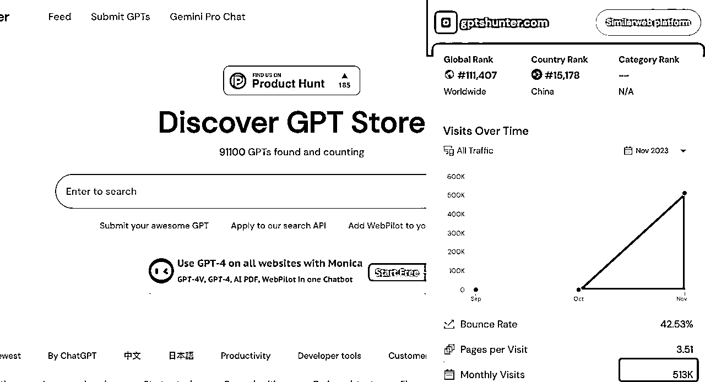
其实不光是我们看到的，这些网站，还有很多不没有看到的，套壳，不管是订阅，还是广告费都收入都是相当的可观。
从去年（2023）年底陆陆续续，国外和国内涌现出许多代表性的AI工具，其中包括ChatGPT、Midjourney、通义和文心一言等知名AI工具。
这些工具不仅为用户提供了强大的功能，还可以通过对开发者提供API的方式，为开发者创造了丰富的生态系统涉及领域包括沉浸式翻译、信息聚合以及文章内容分析等，太多了，数不尽，下面列举2个我正在用的例子
我今年专注公众号赛道，比如用大批量的 AI 生成文章，最近切换到百度的千帆大模型提供的API接口，用来生成文章， 价格很便宜，0.12元/千token，一篇文章几毛钱，但是把这个接口开发成产品，给更多的人服务，就有利可图。
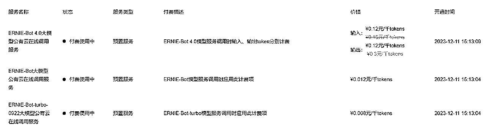
利用高大上的 ChatGPT API 或者是其他接口，开发者可以构建沉浸式翻译工具，为用户提供更加智能的翻译体验。
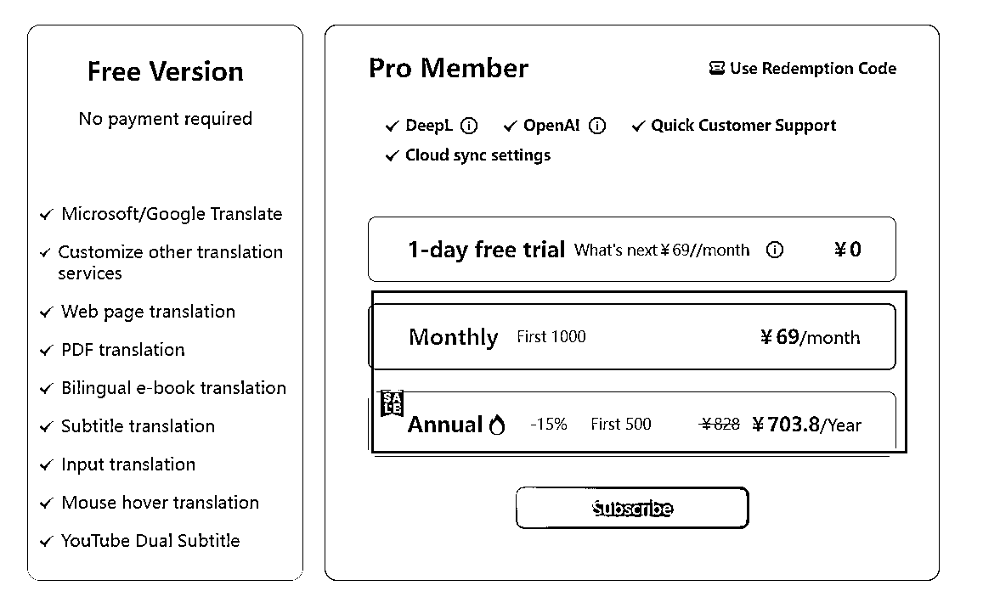
还有很多这样的工具……
AI 技术的加入，为许多行业，特别是传统行业，带来更多翻天覆地的可能性，这篇文章里，我就基于两个 AI 项目，高于每月10w$+利润， 做了产品分析与拆解。
来 2 个，收入都是相当的炸裂，一个是 2c，一个是 2b。 收入都是每月 10w+， 美元。
账号：flot.ai
类目: 桌面应用程序
付费形式：通过订阅制付费，单月最低 9.9。
选择该账号拆解的原因：
使用 Flot AI，您可以将 ChatGPT 集成到您的日常工作流程中，并在您输入或突出显示任何应用程序或网页上的文本的任何地方弹出 ChatGPT。
一键编写、改进、释义、总结、解释、翻译或回复任何文本。
通过官网和其他地方获取的数据来源：
2w 用户： 单个订阅 9.9$ * 2w付费用户 = 20w$/每月
10w 用户： 不敢想……
下面是包年的费用，单月购买是在这个基础上，+25%。
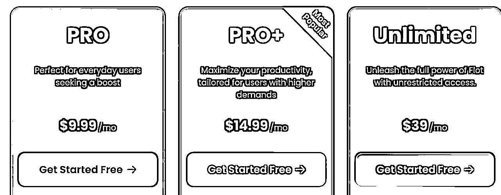
账号：formwise.ai
类目: 网页应用
付费形式：通过订阅制付费，单月最低 29$。
选择该账号拆解的原因：
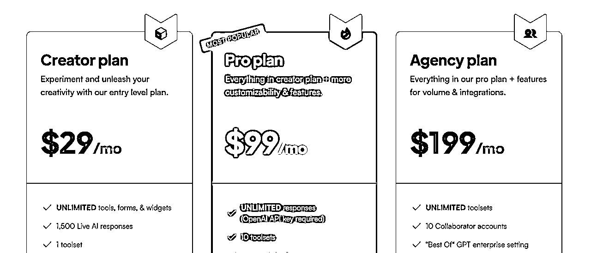
通过builtwith 网站，可以查询到网站的收入，利润$105k+, 妥妥的就是 10w+每个月的应用。
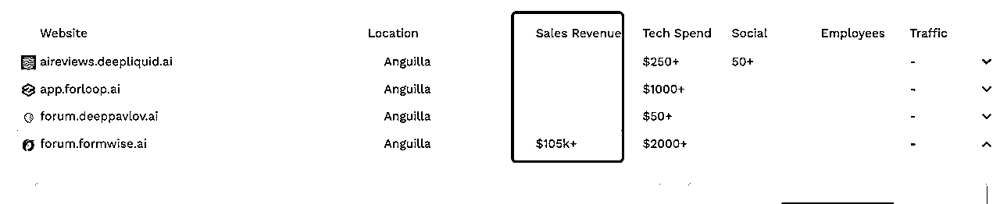
从营销、文案写作、网络研讨会、辅导工具等。Formwise 提供了营销工具。通过每天添加新模板，帮助客户可以花更少的时间进行提示，将更多的时间用于销售。
就是一个 AI 套壳的程序，提供提示词优化等等的工具。
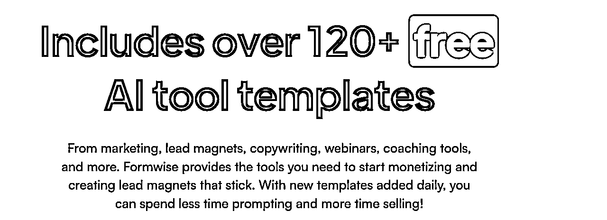
Formwise.AI 将 GPT 提示转化为终端用户的特定 AI 工具的产品从其他 AI 公司中脱颖而出。它迎合市场独特的需求。
对非技术用户的可达性：使 AI 技术民主化，使非技术人员可以访问。这扩大了他们的潜在客户群，因为它消除了技术上的进入障碍。就是信息差。
上面的 2 个产品，提供了一套AI工具，可协助生成内容，例如副本，脚本和电子邮件。他们的重点是将GPT提示转化为终端用户的AI工具，为营销客户提供已做好的AI工具，构建强大的内部工具，以及使AI对非技术人员可达。
用最小的成本，先跑通 mvp，不要想着完美后上线，先验证这个需求是否成立。
专注于以最简单的方式解决真正具体的问题。我并不是想创建一个一体化的解决方案，而是解决一个非常痛苦的问题并从那里开始工作。
这意味着不需要设计那么多的页面，也不需要编写那么多的代码。
再不济，直接用一个 excel 先来手动统计，对方业务需求，然后使用 chatgpt 找到答案之后，直接回复给对方，但是这个基本上是基于小量业务，而且不是实时的，可以借助这种渠道。
最好，自己懂技术的，找个开源框架，找个现成的小跑起来，后面慢慢优化。
不懂技术的，找个外包，淘宝一堆这种，能跑就行，就是要要快，而且便宜的。大概就是在 几千块。
创建类似，这种 AI 内容生成工具的最小可行性产品 (MVP) 可以通过以下几种途径：
想清楚你的产品的目标用户是谁，他们的需求是什么。
技术人，最怕的就是以为自己是最牛逼的，按照自己意淫来，那就糟糕透了。
基于对需求理解，开发出一个可以提供基本功能的原型。或者是 github 上找一个开源的项目，比如 chatbot等等，你可以使用 Python 等编程语言及其相关开发框架。
网页类的网站，参考下面这个网站，就是通过一张前端的草图就可以，直接生成前端的代码。
https://v0.dev/
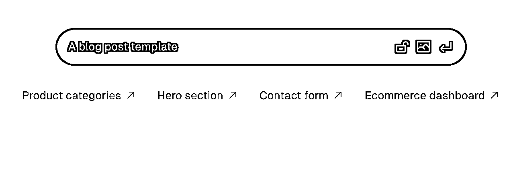
后端的代码可以用 chatpgt 直接生成即可。
对于客户端的话，比如这个产品， 自带多平台的客户端：
https://github.com/ChatGPTNextWeb/ChatGPT-Next-Web
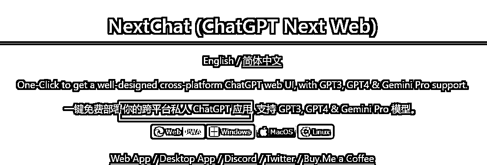
测试和优化（后续慢慢来），验证原型MVP 效果如何。
这种方式的优点是开发过程中你可以对产品有完全的控制，并且可以根据实际需要进行定制。
但是，这也需要你拥有相应的编程和 AI 知识，或者你需要花费时间和成本来获取这些知识。
进入生财之后，发现可以金钱买别人的时间，价值交换，生财有很多这样的程序员。写一个资源交换，应该有不少人可以付费支援。
也可以考虑找一个专业的外包公司来为你开发这个产品。外包团队通常由经验丰富的软件工程师和项目管理专家组成，他们可以帮助你从设计到开发再到测试的整个过程。
疫情的时候找过淘宝，做个几个网站，价格大概都是在 5～8k 左右。最好找天猫的，现在不是可以仅退款服务么？服务不好就退款。
网页都比较便宜，如果是开发桌面应用的，这个门槛比较高，这个价格也相对贵一些。在 2～5w 左右。
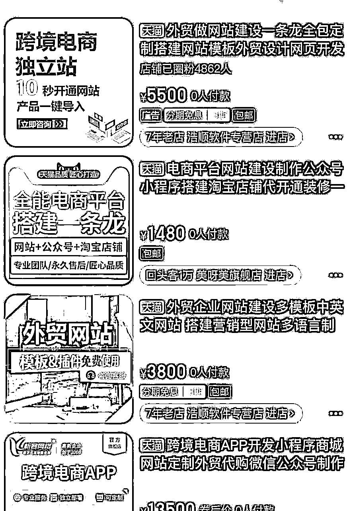
英语可以的，找一个国外的兼职网站freelanceer也行，要求就是快，先跑通 mpv。
这种方式的优点在于你可以利用他们的专业知识和经验。这将大大降低你需要自己解决复杂问题的概率，并且可能比自己开发要快得多。
但是，这也会带来一些资金压力，如成本可能会比较高，而且你需要确保他们理解你的需求并且可以提供高质量的工作。
无论你选择哪一种方式，目的都是用最快的时间验证 MVP。
其余的，在最开始的时候制定清晰的计划，包括你的预算，时间表，以及你的业务和技术需求，最好白纸黑字的写清楚，避免扯皮。
如果是我，我会怎么做。
flot.ai的访问量和来自各个国家的分布。
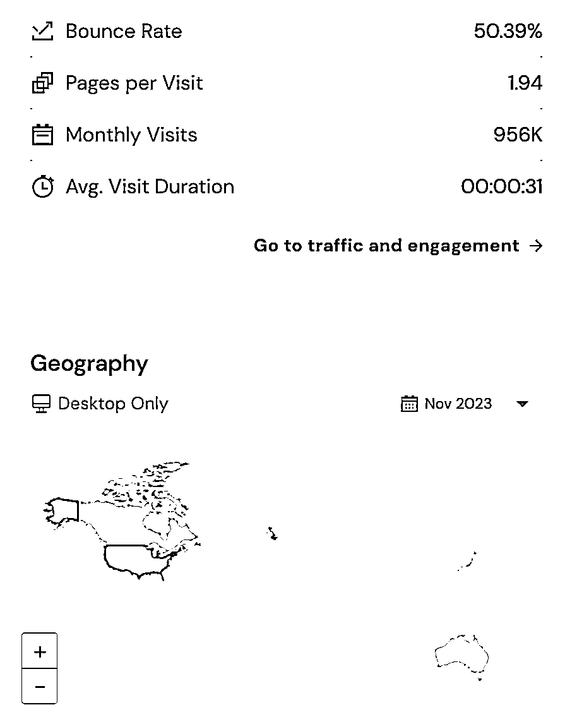
查看formwise.ai流量来源，主要是直接访问和自然搜索的结果。
直接： 66%
自然搜索：17%
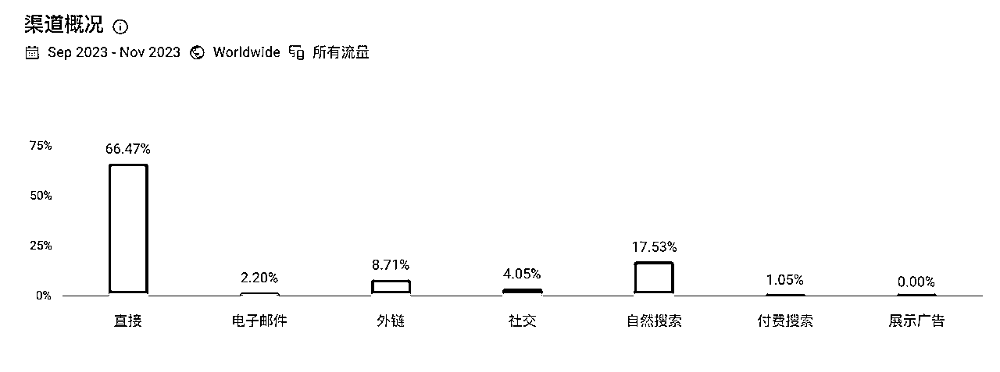
搜索浏览量
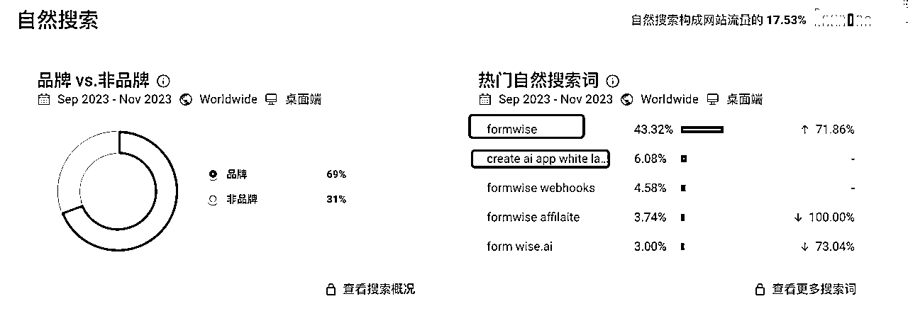
社交媒体：
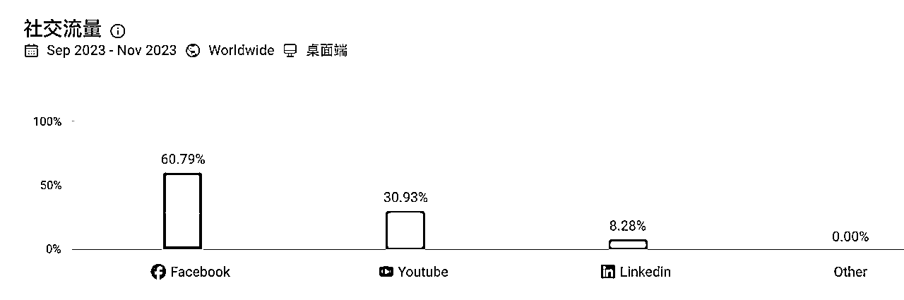
flot.ai 看了作者的 x 的记录，他们是基于 PMF产品市场需求，他们是在 product hunter 上面发布的
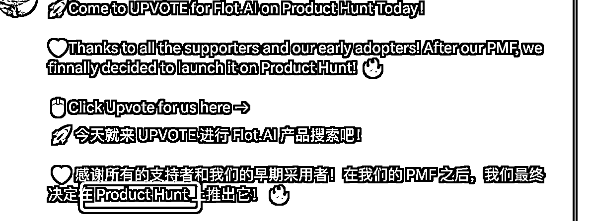
创建新的 AI 工具后，需要对其进行推广以吸引用户和增加流量。以下是一些可以考虑的推广和运营策略：
提供免费试用：提供用户免费试用你的产品，以吸引他们体验你的产品。如果他们觉得你的产品对他们有用，他们很可能会转成付费客户。
推特还有 v2ex 上面经常看到有人提供这个方式，获取第一波用户。
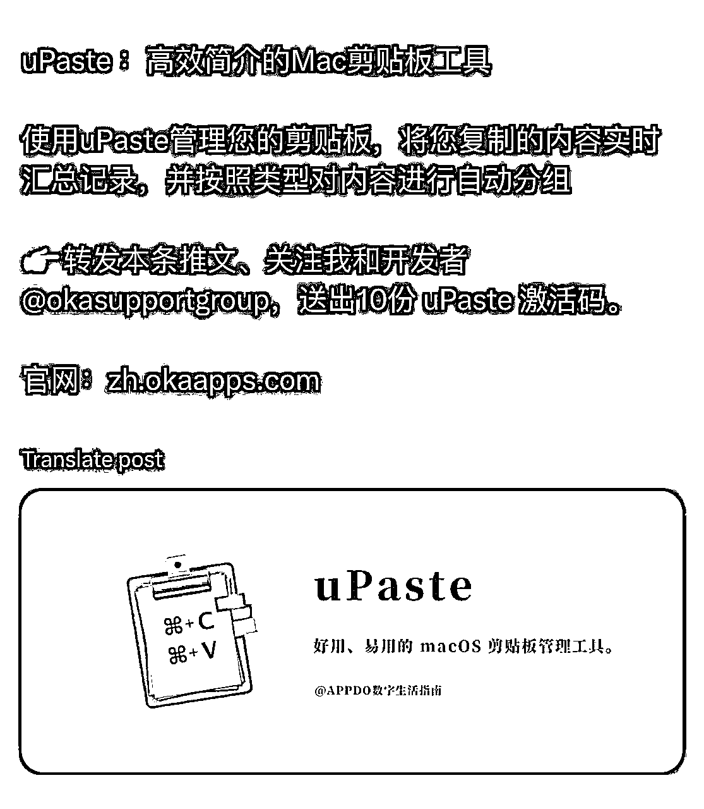
v2ex 的群体，大部分都是程序员，产品好，提供了价值，自发的增长一笔。
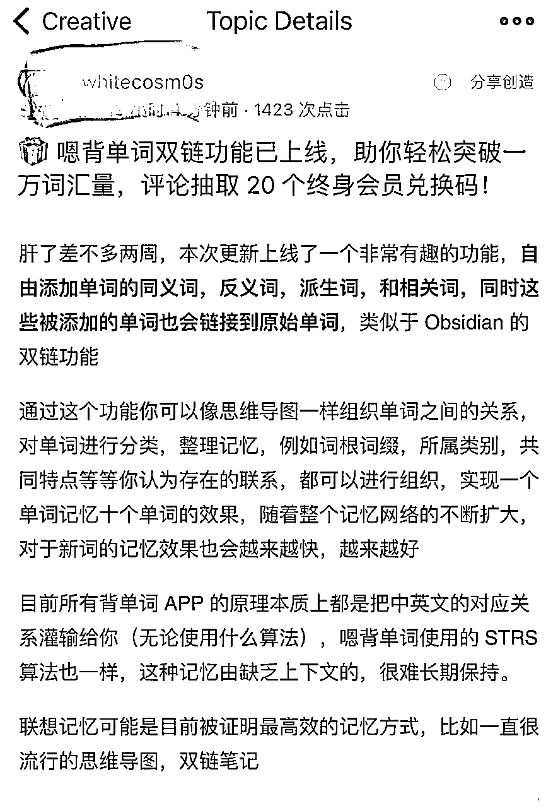
构建一个博客或新闻页面，发布与你的产品相关的内容。这将帮助提高你的网站在搜索引擎中的排名，从而增加流量。
要么很简单，用一个静态页面就行，或者是 vercel.com 提供免费域名，部署的页面就可以。
利用社交媒体：运用 Facebook，LinkedIn，Twitter， medium, reddit, hacker news 等社交媒体进行推广。分享关于你的产品的信息，引导用户访问你的网站。
写自己产品的时候，不要不好意思，但是要够真诚一些，不要有浮夸，骗人的东西在里面。
拆解的过程中，发现有Reddit 论坛也是不错的地方。
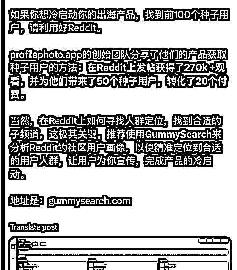
整理这次的拆解，看到一个博主推广自己的网站，用的就是免费的社交 blogs。
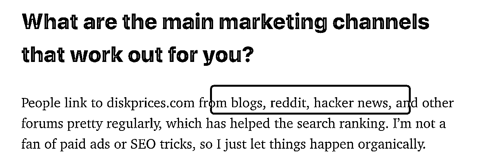
国内的用户，可以在其他相关的网上发布信息，知乎、小红书，公众号，等等。
合作营销：与同行业内的公司或者博主进行合作，他们已经有了稳定的受众群体，可以帮助你更快地推广你的工具。
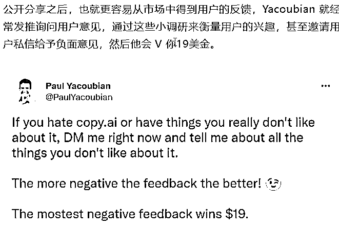
优化搜素引擎(SEO)排名：可以通过提高你的产品的搜索引擎排名来吸引更多的流量。比如使用关键词优化和 SEO 策略。
投放：用广告花费推荐工具，帮你找到更精确的目标用户，以提高广告效果。
售后服务：提供优质的客户服务，回答用户的问题并解决他们遇到的问题。这将帮助建立用户的信任，并可能吸引他们推荐你的产品给其他人。
推广新工具的目标是提高品牌知名度，吸引新用户，并将现有的用户转化为忠诚的客户。你可能需要尝试和调整不同的策略，以找出最有效的方法。
这个需要有一定的资源粉丝基础。
什么是build in public?
“公共建设”一词指的是企业家开发产品或服务时，甚至在产品或服务准备好进入黄金时段之前，就带着观众一起参与的商业实践。 和咱们的航海实战有点类似。
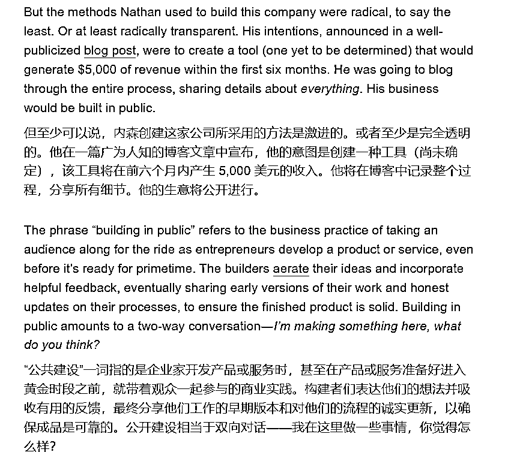
开发者表达他们的想法并吸收有用的反馈，分享他们工作的早期版本和对他们的流程的诚实更新，以确保成品是可靠的。公开建设相当于双向对话——我在这里做一些事情.
下面这个就是大名鼎鼎的 copy.ai（目前月入600w+） 网站的起步， 就是这个方法。
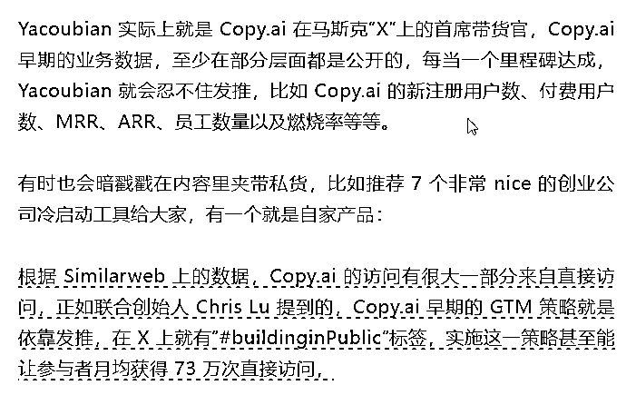
开发网站，大概投入：5k~5w；
AI域名：AI后缀域名 500元， 其他根域名更便宜 100 左右
服务器：就用阿里云的，每年2C4U的， 1000+
总投入：6k~5w元。
互联网产品，成本都可以摊薄，复利的效应。
通过buitwith 网站，可以查询到网站的收入，利润$105k/月。
主要盈利方式，就是订阅；
三种方式：
创作者： 29$
专业：99$
代理：199$
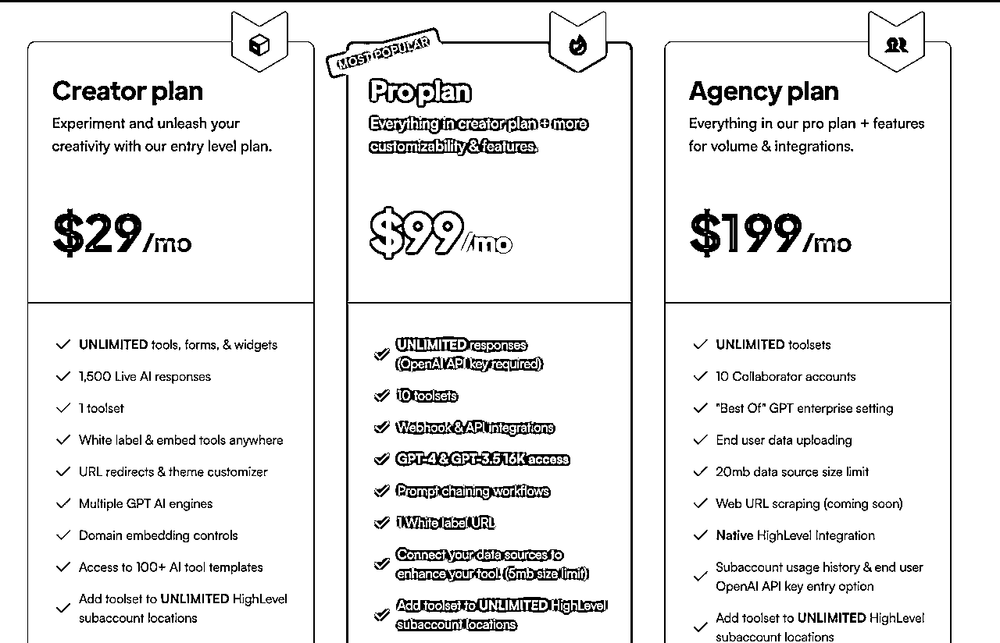
单个 creator 订阅 29刀，针对普通用户来说，足够用了。
每月 105k ÷ 29 = 3620 个付费用户。
定价 99，只需要 1000 用户就能超过 10w+。
起步： 抓住一个小的需求，模仿已经取得成功的产品
生存： 扛住上一波领先者的先发优势，不点优化
非标产品： 在非共识的领域，做正确而非容易的事
建立壁垒：选择有难度的业务和技术路线
如果是我自己来做这个项目，会有哪些关键环节，
一句话：无论你选择哪一种方式，目的都是用最快的时间验证 MVP。。
项目核心：找人气值、高收入的AI工具，然后模仿，把量打上去。
从上面的分析来看，AI出海是有机会的，单个应用的收入，没有看到有上限。
如果这些做对了，有机会达到10w每月，利润可观。
看到这些AI工具，数据诱人，海外的用户已经被教育过了，付费意愿是有的，AI 出海肯定是能做的， 就看你的产品能不能让他们也来买单。
通过多个渠道的推广，不同形式的营销，能获得不错的种子用户；
但是，高成本开发费用，需要懂英语, 也是一个门槛，与此同时，也是一个机会。
最近大家都能感受到，国内的卷起来了， 赚钱也越来越难了，那就一起出海赚美元。
出海的项目是很多的，只要你想赚钱，不管是做什么，做工具，做导航，做咨询，卖铲子等等，都是可以赚到钱的。
最后祝大家一起生财有术，2024 年继续加油搞钱。